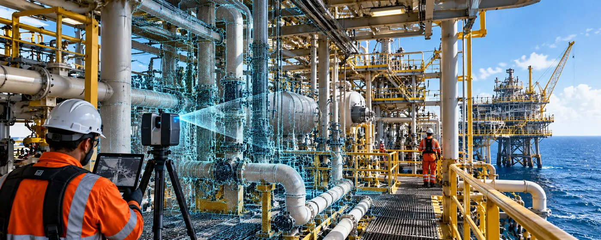

The Assignment
Offshore facilities present demanding reality-capture conditions due to their remote locations, complex industrial infrastructure and tightly controlled access. Capturing these environments requires detailed planning and efficient field execution within limited access windows.
The assignment involved carrying out high-detail terrestrial laser scanning across remote offshore facilities, creating comprehensive digital capture of complex existing conditions while working within strict site-access and operational constraints.
Our Approach
CS TECH Ai's North American reality-capture team deployed a focused four-person field team to execute the offshore scanning programme within a tightly managed schedule.
The engagement included:
- Terrestrial laser scanning of complex offshore facilities
- High-detail capture of existing industrial infrastructure and equipment
- Planning of scan positions to provide comprehensive coverage across complex environments
- Capture within strict site-access and operational constraints
- Field coordination around restricted working windows
- Systematic collection of approximately 3,000 individual scans
- Management and organization of large volumes of captured spatial data
- Quality-focused field execution to minimise the need for repeat capture
- Completion of the scanning programme within 17 days
The compact field team and structured capture approach enabled a substantial volume of reality-capture data to be collected within the available offshore access window.